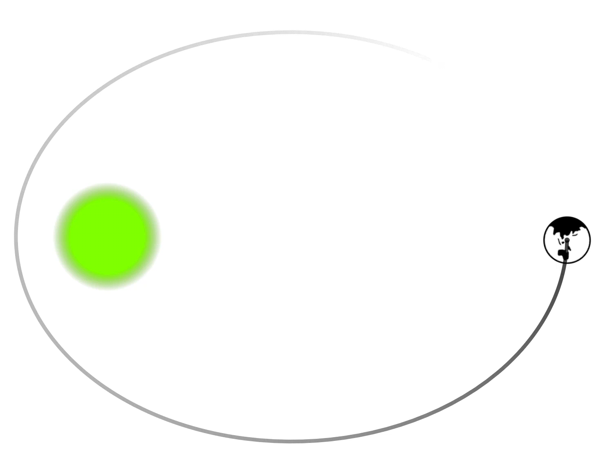

Angular momentum, a key concept in rotational dynamics, is always defined about a
point or an axis. For a particle of mass \(m\), moving with velocity \( \vec{v} \),
and located
at position \( \vec{r} \) relative to the origin \( O \) as shown,
Diagram: Particle at position \(\vec{r}\)
moving with momentum \(\vec{p}\).
its angular momentum \(
\vec{L} \) is given by:
\(\qquad \vec{L} = \vec{r} \times m\vec{v}\)
The unit of angular momentum in the SI system is \(\text{kg m}^2/\text{s}\). Its
direction is determined using the right-hand rule, perpendicular to the plane formed
by \( \vec{r} \) and \( \vec{v} \).
In scalar form, the same equation can be written as:
\(\qquad {L} ={r} m{v}\sin\theta\)
with \(\theta\) being the angle between the two vectors \(\vec{r}\) and \(\vec{v}\)
There are two methods to calculate angular momentum, depending on the details
provided:
Method 1: Using component of momentum
Use the component of linear momentum \( \vec{p} \)
that is perpendicular to the position vector \( \vec{r} \).
Diagram: Illustration of
Method
1.
\(\qquad L = (r)(p_{\bot})\)
This is just another way of writing \( {L} ={r} m{v}\sin\theta\) as
\(p_{\bot}=p\sin\theta\)
Method 2: Using shortest distance
Use the shortest distance \(d\) between the line
of motion of the particle and the point of interest.
Diagram: Illustration of Method
2.
\(\qquad L = (p)(d)\)
This is also another way of writing \( {L} ={r} m{v}\sin\theta\) as
\(d=r\sin\theta\). This method is useful when determining the
perpendicular
component of \( \vec{p} \) is difficult.
Let's now explore angular momentum for different scenarios:
Particle moving in a straight line:
For a particle moving
such that its shortest distance from a point is \(d\), the angular
momentum
remains constant as \( L = p \cdot d \).
Diagram: Particle in
straight-line
motion.
Particle in circular motion: For a
particle of mass \( m
\)
moving in a circle of radius \(r\) with velocity \( v \), as shown:
Diagram: Particle in circular
motion.
the velocity and
the radius vector are perpendicular. So, angular momentum about the
center
is:
\(\qquad L = mvr\sin\frac{\pi}{2} \).
\(\Rightarrow\quad L = mvr \).
Rigid body in rotation: For a
rotating rigid body, each
particle can be considered in circular motion around a common axis. To
find
total angular momentum of entire body about the axis of rotation, we
require
to calculate the angular momentum of individual particles and add them
up
using techniques of integration.
Diagram: Rigid body in rotation.
Diagram: Rigid body in rotation.
Animation belabove shows a rigid body in rotation. Consider a moment
when
the
angular velocity of the body is \(\omega\) as shown in the next diagram.
The
angular momentum associated with an element of mass \(dm\) at a distance
\(r\) from the axis of rotation is:
\(\qquad dL=\left(dm(\omega r)\right)r\)
\(\Rightarrow\quad \int dL=\omega\int r^2dm\)
\(\Rightarrow\quad \int dL=I\omega\)
Thus, for a rigid body rotating about an axis, the angular momentum is
given by \(I\omega\), where \(I\) is the moment of inertia and
\(\omega\) is the angular velocity. This is analogous to linear momentum
(\(P = Mv\)), where \(M\) is the mass (inertia for linear motion) and
\(v\) is the velocity. In both cases, momentum is the product of the
object's resistance to change in motion (inertia) and its rate of
motion.
Angular Impulse
Angular impulse \(\vec{I}\) is a property of torque \(\tau\) calculated for a given
time interval \(\Delta t\). It is defined as:
Angular impulse is a vector quantity and has a SI unit of
\(\text{kg m}^2/\text{s}\), same as that of angular momentum.
The relationship between torque and angular momentum is fundamental in rotational
dynamics. It establishes how the angular momentum of a system changes under the
influence of an external torque.
For a Rigid Body in Rotation
Consider a rigid body rotating about an axis with angular velocity
\(\vec{\omega}\) and moment of inertia \(I\). If a torque \(\vec{\tau}\)
acts on
the body about the axis of rotation, then:
\(\qquad \vec{\tau} = I\frac{d\vec{\omega}}{dt}\)
Since angular momentum \(\vec{L} = I\vec{\omega}\), we can write:
\(\qquad \vec{\tau} = \frac{d\vec{L}}{dt}\)
This shows that the net torque acting on a rigid body equals the rate of
change
of its angular momentum.
For a Particle
For a particle, the angular momentum about a point \( O \) is given by:
\(\qquad \vec{L} = \vec{r} \times \vec{p}\)
To understand how angular momentum changes over time, we differentiate
this
expression:
Thus, the net external torque acting on the system equals the rate of
change of
the system's total angular momentum.
Thus, a general relation between angular momentum about an axis and the torque
calculated about the same axis under all situation, can be established as:
Following are a few examples where the relation of torque and angular momentum
could further be justified.
Application of \( \vec{\tau} = \frac{d\vec{L}}{dt} \) to a
Rotating Door
When you push a door at its edge, you apply a torque that causes the door
to rotate. The angular momentum \( \vec{L} = I \omega \) of the door
changes due to the applied torque.
Assume the moment of inertia \( I \) of the door is constant. The change
in angular velocity \( \omega \) is determined by the torque exerted on
the door:
\(\qquad \vec{\tau} = \frac{d\vec{L}}{dt} = I \frac{d\omega}{dt} = I
\alpha\)
Here, \( \alpha \) is the angular acceleration of the door. The applied
torque causes a change in angular momentum, which results in the door's
rotational motion.
Diagram: Angular momentum in a
rotating door.
Application of \( \vec{\tau} = \frac{d\vec{L}}{dt} \) to
the Motion of a Projectile
The equation \( \vec{\tau} = \frac{d\vec{L}}{dt} \) is a fundamental
relation that applies to the motion of a projectile. This example shows
how the change in angular momentum of the projectile is produced by the
torque exerted by the force of gravity.
Diagram: Angular momentum
conservation for projectile motion.
We consider the motion of a projectile, with the initial point as the
origin \(O\). The position vector of the projectile at a later time is:
\(\qquad \vec{r} = x\hat{i} + y\hat{j}\)
Since the gravitational force on the particle is \( \vec{F} = -mg\hat{j}
\), the gravitational torque is given by:
Thus, the equation \( \vec{\tau} = \frac{d\vec{L}}{dt} \) holds for
projectile motion, showing that the torque is directly related to the
rate of change of angular momentum.
Application of \( \vec{\tau} = \frac{d\vec{L}}{dt} \) to
Earth's Orbit Around the Sun
The Earth orbits the Sun in an elliptical path, and the gravitational
force acts as the central force. Since there is no external torque
acting on the Earth-Sun system about the center of the Sun, the angular
momentum of the Earth is conserved.
As the Earth moves closer to the Sun (at perihelion), its speed
increases, and as it moves farther (at aphelion), its speed decreases.
This variation in speed is necessary to conserve angular momentum:
\(\qquad L = r m v\)
Where \( r \) is the distance between the Earth and the Sun, \( m \) is
the mass of the Earth, and \( v \) is its velocity. As \( r \)
decreases, \( v \) must increase to conserve angular momentum.
Diagram: Conservation of angular
momentum in Earth's orbit.
The relation between torque and angular momentum is a fundamental law that applies
to any system of particles, regardless of whether the motion involves a rigid body
or not, and whether or not the motion is purely rotational. This general relation is
expressed as:
Here, \( \vec{\tau}_{\text{net}} \) is the net external torque on the system, and \(
\vec{L}_{\text{Total}} \) is the total angular momentum of the system. This relation
holds true for any system of particles, including non-rigid bodies and complex
motions that are not purely rotational.
In the absence of external torque (\(\vec{\tau}_{\text{net}} = 0\)), the rate of
change of angular momentum becomes zero. This means that the angular momentum
remains constant over time. This is known as the principle of conservation of
angular momentum, and it applies to any system of particles, regardless of the type
of motion.
Therefore, the total angular momentum \( \vec{L} \) is conserved, meaning:
\(\qquad \vec{L} = \text{constant}\)
This conservation principle is a powerful tool in analyzing not only rotational
motion in rigid bodies but also more general motion in complex systems where torque
and angular momentum play a role.
Following are a few examples of situations demonstrating angular momentum
conservation:
Analysis of figure skater controlling its spinning
A figure skater can control their spin rate by adjusting their moment of
inertia. This is shown in diagrams below:
Diagram: Skater with high moment
of inertia and low angular velocity.
Diagram: Skater with low moment
of inertia and high angular velocity.
When the skater pulls their arms in, they reduce their moment
of inertia \( I \), which causes an increase in angular velocity \(
\omega \) to conserve angular momentum.
For example, if a skater starts with an initial moment of inertia \( I_1
= 4 \, \text{kg} \cdot \text{m}^2 \) and spins at \( \omega_1 = 2 \,
\text{rad/s} \), and then reduces their moment of inertia to \( I_2 = 2
\, \text{kg} \cdot \text{m}^2 \), the new angular velocity is:
Thus, the skater spins twice as fast after pulling in their arms. This is
a clear demonstration of the conservation of angular momentum as the
decrease in moment of inertia results in a compensating increase in
angular velocity.
Analysis of Earth's Orbital Motion
In Earth's orbital motion around the Sun, the gravitational force applied
by the Sun passes through its center, meaning the torque about the
center of the Sun is zero. Thus, Earth's angular momentum remains
conserved as it revolves around the Sun. This is shown in animation
below:

Diagram: Variation of speed of
Earth in its orbit.[NOT TO SCALE]
At perihelion (closest point to the Sun), Earth moves faster, while at
aphelion (farthest point), it moves slower. This variation in speed is
necessary to conserve angular momentum as the distance between Earth and
the Sun changes.
For instance, if the distance from Earth to the Sun at perihelion is \(
r_p = 1.47 \times 10^{11} \, \text{m} \) and at aphelion is \( r_a =
1.52 \times 10^{11} \, \text{m} \), the orbital speeds can be calculated
using the formula:
\(\qquad m v_p r_p = m v_a r_a\)
Given Earth's speed at perihelion is \( v_p = 30.3 \, \text{km/s} \), we
find the speed at aphelion to be:
This example highlights how angular momentum conservation governs
planetary motion.
Two spinning discs attain common
angular velocity
Two disks are mounted on the same axle. Disk 1 has a moment of
inertia \( I_1 \) and is spinning with angular velocity \( \omega_1
\). Disk 2 has a moment of inertia \( I_2 \) and is initially at
rest. Disk 2 is then dropped onto Disk 1, and friction between them
causes them to eventually reach a common angular velocity \(
\omega_{\text{final}} \). Find \( \omega_{\text{final}} \).
Solution:
Since no external torque acts on the system, angular momentum is
conserved. The total angular momentum before and after the collision
remains the same.
The initial angular momentum is given by \( L_{\text{initial}} = I_1
\omega_1 + I_2 \omega_2 \), where \( \omega_2 = 0 \) because Disk 2 is
initially at rest. Therefore, the initial angular momentum simplifies to
\( L_{\text{initial}} = I_1 \omega_1 \).
After the collision, the two disks rotate together with a common angular
velocity \( \omega_{\text{final}} \). The total angular momentum after
the collision is \( L_{\text{final}} = (I_1 + I_2) \omega_{\text{final}}
\).
By the conservation of angular momentum, we equate the initial and final
angular momenta: \( I_1 \omega_1 = (I_1 + I_2) \omega_{\text{final}} \).
Solving for \( \omega_{\text{final}} \), we get \( \omega_{\text{final}}
= \dfrac{I_1 \omega_1}{I_1 + I_2} \).